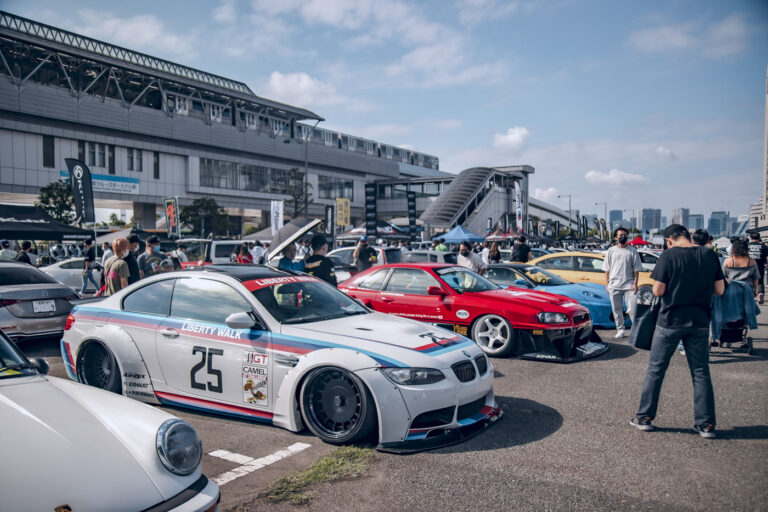
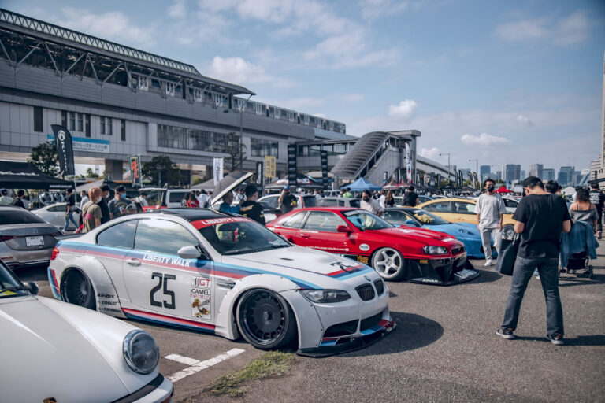

Meet our youTube videos
Are you tired of endlessly scrolling through your social media feeds without finding any worthwhile content? Do you crave entertaining and informative videos that capture your attention and leave you wanting more? Look no further than our YouTube channel!
Lastest Projects
Lamborghini Huracan"
The Liberty Walk Lamborghini Huracan is a stunning and powerful supercar that offers a unique and thrilling driving experience. With its combination of advanced technology, aggressive styling, and raw power, it's no wonder why it has become such a coveted car among enthusiasts.

Ferrari F348"
One of the most striking customizations of the F348 is the Liberty Walk body kit. The Liberty Walk kit is designed to give the car a more aggressive and distinctive appearance, with wide fenders, extended side skirts, and front splitters.

Ferrari F40"
The Liberty Walk version of the F40 is a customized interpretation of the classic Italian supercar, created by the famous Japanese tuning company, Liberty Walk. With its wider body, aggressive aerodynamics, and custom wheels, the F40 Liberty Walk is a striking sight.

Nissan GTR R35"
One of the most notable customizations of the GT-R R35 is the Liberty Walk body kit. The Liberty Walk kit adds a unique and aggressive look to the already stunning GT-R, with its wide fenders, extended side skirts, and front splitter0

Lamborghini Huracan"
The Liberty Walk Lamborghini Huracan is a stunning and powerful supercar that offers a unique and thrilling driving experience. With its combination of advanced technology, aggressive styling, and raw power, it's no wonder why it has become such a coveted car among enthusiasts.

Porsche Carrera Turbo 992"
One of the most notable customizations of the Porsche Carrera is the Liberty Walk body kit. The Liberty Walk kit adds a unique and aggressive look to the already stunning 911, with its wide fenders, extended side skirts, and front splitter.
Our History
"THE VISION OF WATARU KATO"
Liberty Walk was established by Wataru Kato when he was 26 years old. The business was first operated in a small vehicle lot where they could only exhibit 3 cars.
Liberty Walk has evolved throughout its history into one of the biggest names in automotive tuning. Put simply, there is no other brand out there being quite so brave, or seemingly capturing the current tuning zeitgeist as this brand.
Gallery
 
